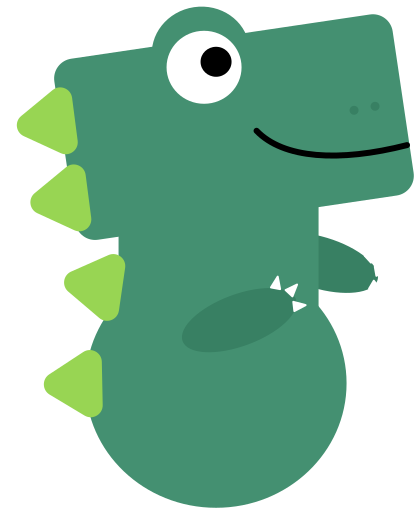
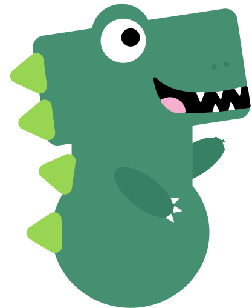
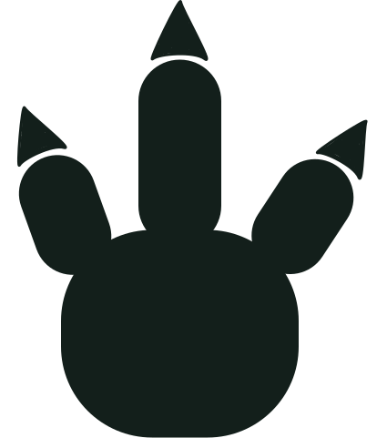

Allow camera access to start signing




Starting camera…
Kumquat Sign Language was made to help my autistic brother Kumquat practice sign language — when he makes a sign correctly, he gets to see it right away as an emoji popping up on screen. It's also where we keep every sign we've invented together as siblings, so none of them get forgotten. Head to the Training Page to teach it a new sign — it remembers everything on this device, so you never have to retrain twice.
Created By: Falyssa, with Love